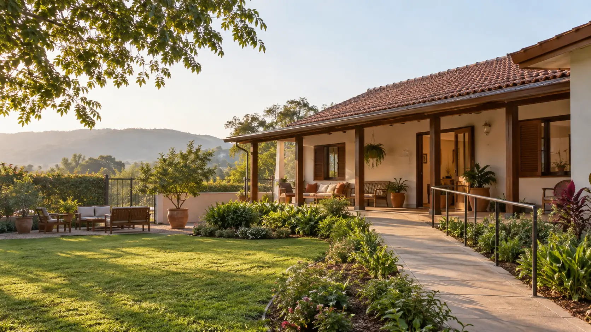

Conversa inicial
Coleta de informações essenciais para compreender a necessidade e orientar o próximo passo.

CENTRO TERAPÊUTICO · ACOLHIMENTO RESIDENCIAL FEMININO
Uma proposta de acolhimento residencial para mulheres que enfrentam dependência química e uso problemático de álcool, com rotina estruturada e acompanhamento multidisciplinar.
SOBRE A CASA AURORA
A estrutura conceitual foi pensada para combinar privacidade, convivência, acompanhamento e uma rotina que ajude cada mulher a participar ativamente do próprio processo.
O atendimento começa com uma conversa responsável. A equipe entende o caso, esclarece como funciona o acolhimento e verifica se a proposta é adequada antes de qualquer encaminhamento.
ABORDAGEM TERAPÊUTICA
O projeto apresenta as etapas do acolhimento com linguagem acessível, evitando promessas de resultado e deixando claros os limites de uma avaliação inicial.
Coleta de informações essenciais para compreender a necessidade e orientar o próximo passo.
Análise responsável do contexto físico, emocional, social e familiar.
Objetivos e atividades definidos conforme a avaliação e revistos ao longo da jornada.
Convivência, grupos, atendimentos e práticas organizadas dentro de uma rotina compreensível.
Espaço para informação, limites e participação familiar quando indicada.
Preparação gradual dos próximos passos e da rede de apoio necessária.
ESTRUTURA RESIDENCIAL
A página mostra o que a família precisa conhecer antes de uma visita: espaços, rotina, privacidade e condições de acolhimento.
Agendar conversa inicialQuartos organizados para descanso, privacidade e convivência responsável.
Espaços reservados para conversas individuais, grupos e orientação familiar.
Ambientes para refeições, atividades orientadas, leitura e integração.
Jardim, caminhada e permanência ao ar livre dentro da rotina da casa.
Circulação planejada para receber diferentes necessidades com segurança.
PARA A FAMÍLIA
O site dedica uma jornada específica à família, explicando como funciona a primeira conversa, quais informações serão solicitadas e o que esperar das etapas seguintes.
A equipe ouve a situação, identifica urgências e esclarece se o serviço demonstrado seria compatível com a necessidade.
A família recebe informações sobre rotina, contatos, visitas e como contribuir de forma saudável.
O planejamento pós-acolhimento considera rede de apoio e cuidados profissionais necessários.
INFORMAÇÕES IMPORTANTES
Em um projeto real, as informações abaixo seriam revisadas pela instituição e pelos profissionais responsáveis.
A equipe reúne informações sobre a pessoa, o momento atual, tratamentos anteriores e necessidades imediatas. Só depois orienta os próximos passos.
Não. Cada situação deve ser avaliada por profissionais habilitados. O site não substitui avaliação médica, psicológica ou orientação de emergência.
As regras de contato e visita fariam parte do plano de acolhimento e seriam explicadas antes da admissão.
Não. A Casa Aurora é uma marca fictícia criada pela KRYTHOS para demonstrar como seria um site institucional completo para esse segmento.
CONVERSA DE ACOLHIMENTO
Este formulário não envia dados. Ele apenas demonstra como uma instituição real poderia organizar o primeiro atendimento com privacidade.
PROJETO DEMONSTRATIVO KRYTHOS
A KRYTHOS criou esta marca, estrutura, linguagem e experiência para demonstrar um site institucional responsável para centros terapêuticos.